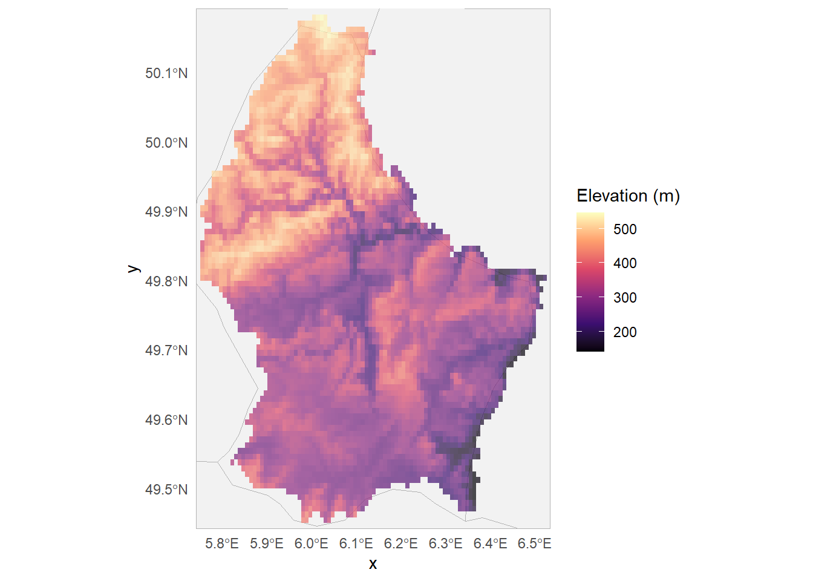
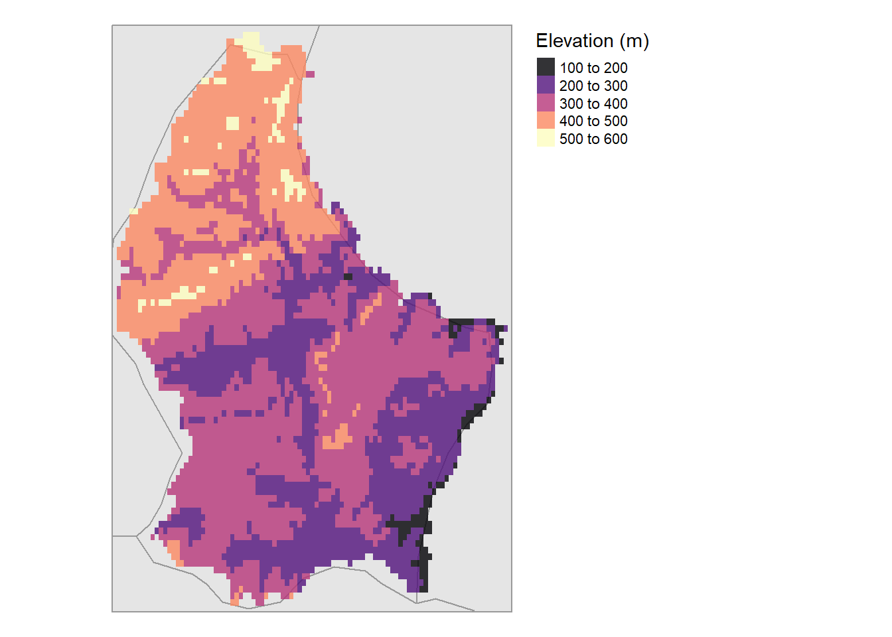
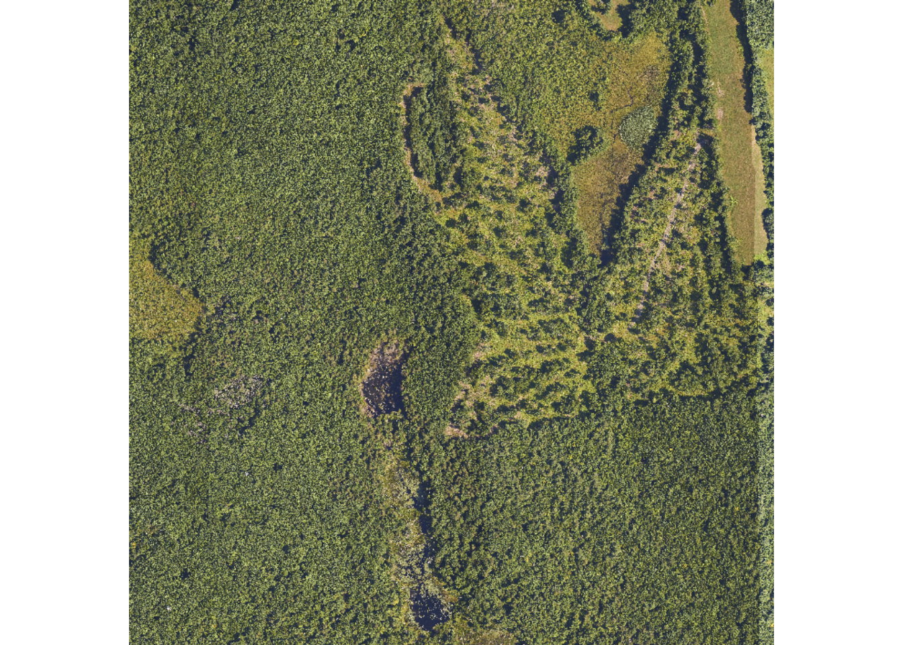
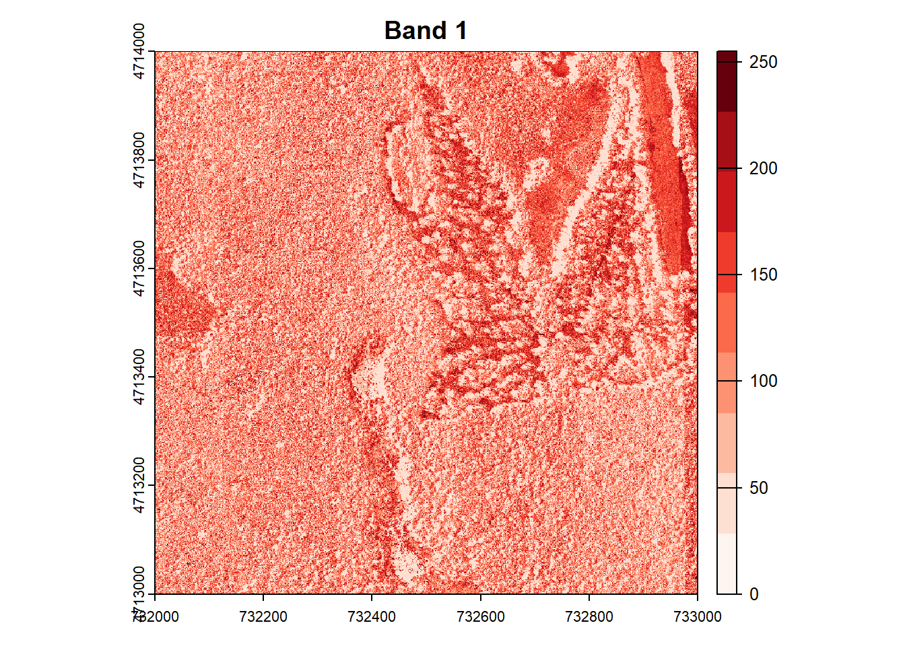
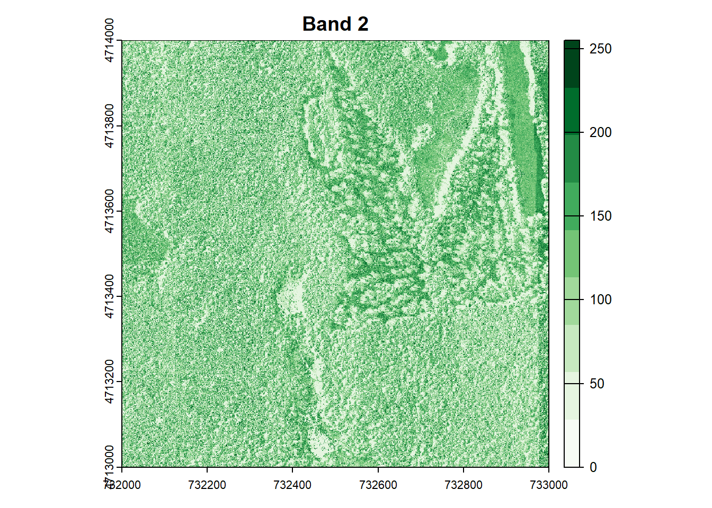
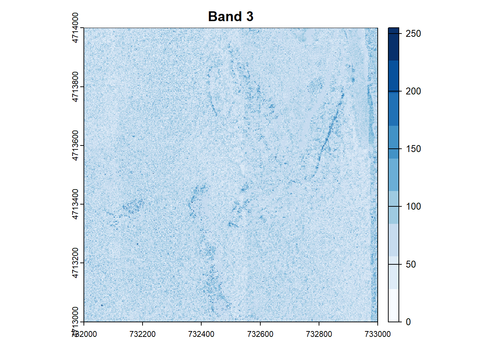

Tutorial #1: Exporting a shapefile from ArcPro
Here is a helpful, step-by-step tutorial for exporting vector data in a shapefile format from ArcPro:
Tutorial #2: Switching between sp and sf objects with spatial vector data
The RSpatial community has recently made the transition from the “sp” package for handling vector data to the Simple Features, or “sf” package. However, not all of the packages that use sp as a dependency have made this switch, so it is sometimes necessary to revert back to sp to get certain functions to run. Thankfully, it is very straightforward to swtich between the two with just a couple of lines of code:

Image by Allison Horst.
library(sf)
library(sp)
# Load in object as sf
nc <- st_read(system.file("shape/nc.shp", package = "sf"), quiet = TRUE)
# Switch to sp
nc_sp <- as(nc, "Spatial")
# And back to sf
nc_sf <- st_as_sf(nc_sp)
# Check to make sure nothing changed
all(nc == nc_sf)## [1] TRUETutorial #3: ggmap with Raster data
The ggmap package and rasters unfortunately don’t like to play nicely together for some reason that is beyond my understanding. To plot a raster onto a ggamp, you need to first convert that raster into a dataframe and then plot it (it’s annoying).
library(terra)
library(sf)
library(ggmap)
library(rnaturalearth)
# Get elevation raster (from sample file that comes with terra package)
elev <- rast(system.file("ex/elev.tif", package = "terra"))
rast_obj <- elev # your raster
# Get basemap layer from rnaturalearth
world <- ne_countries(scale = "medium", returnclass = "sf")
# Determine extent of elevation raster and crop global basemap to that extent
e <- ext(rast_obj)
bbox_sf <- st_as_sfc(st_bbox(
c(
xmin = unname(e[1]),
xmax = unname(e[2]),
ymin = unname(e[3]),
ymax = unname(e[4])
),
crs = 4326
))
world_crop <- st_crop(world, bbox_sf)
# Convert raster object to data frame
rast_df <- as.data.frame(rast_obj, xy = TRUE)
names(rast_df)[3] <- "value"
# Plot basemap with raster on top
ggplot() +
# basemap polygons
geom_sf(
data = world_crop,
fill = "grey95",
color = "grey70",
linewidth = 0.3
) +
# raster overlay
geom_raster(
data = rast_df,
aes(x = x, y = y, fill = value),
alpha = 0.7
) +
coord_sf(
xlim = c(e[1], e[2]),
ylim = c(e[3], e[4]),
expand = FALSE
) +
scale_fill_viridis_c(option = "magma") +
labs(fill = "Elevation (m)") +
theme_minimal()
Tutorial #4: tmap with Raster data
The tmap package plays much more nicely with ggplot. Using the “elev” terra raster object that we loaded in as part of Tutorial #3, we can just sent that over to tmap and plot it as a raster. No dataframe-ification required!
library(tmap)
tmap_mode("plot")
tm_shape(world_crop) +
tm_polygons(col = "grey90", border.col = "grey60") +
tm_shape(elev) +
tm_raster(
palette = "magma", # viridis-based
alpha = 0.8,
title = "Elevation (m)"
) +
tm_layout(
frame = FALSE,
legend.outside = TRUE
)
## Tutorial #5: Indexing multi-dimensional rastersThis tutorial has been modified and condensed from NEON’s “Raster 04: Work With Multi-Band Rasters - Image Data in R” tutorial. I highly recommend checking it out if you’d like to learn more.
# terra package to work with raster data
library(terra)
# package for downloading NEON data
library(neonUtilities)
# package for specifying color palettes
library(RColorBrewer)
# set working directory to ensure R can find the file we wish to import
wd <- "~/data/" # this will depend on your local environment environment
## ----download-harv-camera-data----------------------------------------------------------------------------------------------------------------------------------------------
byTileAOP(dpID='DP3.30010.001', # rgb camera data
site='HARV',
year='2022',
easting=732000,
northing=4713500,
check.size=FALSE, # set to TRUE or remove if you want to check the size before downloading
savepath = wd)## Downloading files totaling approximately 351.004249 MB## Downloading 1 files## | | | 0% | |===============================================================================================================| 100%## Successfully downloaded 1 files to ~/data//DP3.30010.001## ----demonstrate-RGB-Image, fig.cap="Red, green, and blue composite (true color) image of NEON's Harvard Forest (HARV) site", echo=FALSE------------------------------------
# read the file as a raster
rgb_harv_file <- paste0(wd, "DP3.30010.001/neon-aop-products/2022/FullSite/D01/2022_HARV_7/L3/Camera/Mosaic/2022_HARV_7_732000_4713000_image.tif")
RGB_HARV <- rast(rgb_harv_file)
# Create an RGB image from the raster using the terra "plot" function. Note "plot" shows the same image, since there are 3 bands
plotRGB(RGB_HARV, axes=F)
# plot(RGB_HARV, axes=F) < this gives the same result as plotRGB
# Determine the number of bands
num_bands <- nlyr(RGB_HARV)
# To view just one band, index using double brackets:
RGB_HARV[[1]]## class : SpatRaster
## dimensions : 10000, 10000, 1 (nrow, ncol, nlyr)
## resolution : 0.1, 0.1 (x, y)
## extent : 732000, 733000, 4713000, 4714000 (xmin, xmax, ymin, ymax)
## coord. ref. : WGS 84 / UTM zone 18N
## source : 2022_HARV_7_732000_4713000_image.tif
## name : 2022_HARV_7_732000_4713000_image_1# To combine two bands (sum):
# Note this is not scientifically meaningful to combine these - I'm just doing
# for demonstration purposes
RG_HARV <- RGB_HARV[[1]] + RGB_HARV[[2]]## |---------|---------|---------|---------|## Warning: PROJ: proj_create_from_name: Cannot find proj.db (GDAL error 1)## ========================================= # Define colors to plot each
# Define color palettes for each band using RColorBrewer
colors <- list(
brewer.pal(9, "Reds"),
brewer.pal(9, "Greens"),
brewer.pal(9, "Blues")
)
# Plot each band in a loop, with the specified colors
for (i in 1:num_bands) {
plot(RGB_HARV[[i]], main=paste("Band", i), col=colors[[i]])
}


## ----raster-attributes------------------------------------------------------------------------------------------------------------------------------------------------------
# Print dimensions
cat("Dimensions:\n")## Dimensions:cat("Number of rows:", nrow(RGB_HARV), "\n")## Number of rows: 10000cat("Number of columns:", ncol(RGB_HARV), "\n")## Number of columns: 10000cat("Number of layers:", nlyr(RGB_HARV), "\n")## Number of layers: 3# Print resolution
resolutions <- res(RGB_HARV)
cat("Resolution:\n")## Resolution:cat("X resolution:", resolutions[1], "\n")## X resolution: 0.1cat("Y resolution:", resolutions[2], "\n")## Y resolution: 0.1# Get the extent of the raster
rgb_extent <- ext(RGB_HARV)The code for these tutorials was created with assistance from ChatGPT v5.1.